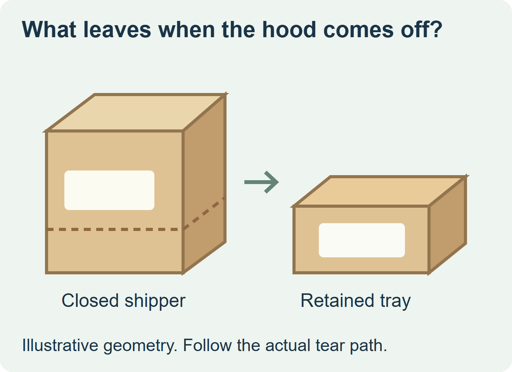
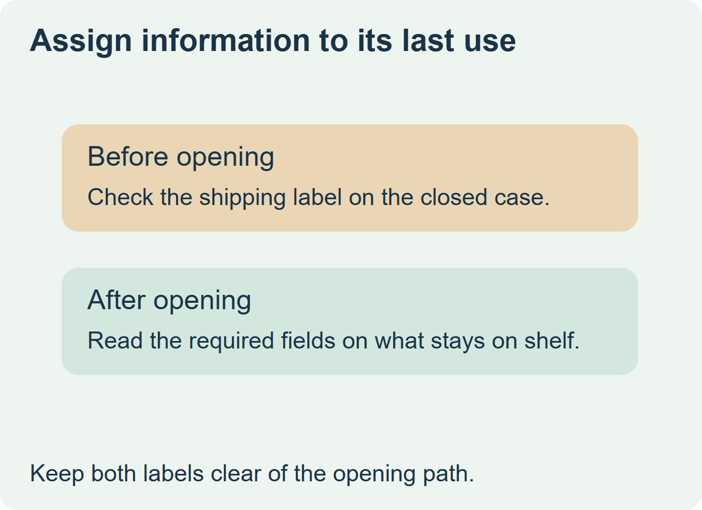

Put information that must remain at the shelf on the retained tray or retail units. A transport-only label can go on a removable hood if the receiver can read it for every required step and no information on it is needed after removal. Keep both label constructions clear of the specified opening path.


Work with the open case as well as the closed one
Ask the case supplier to mark the detachable section and the panels that remain once opened. Smurfit Westrock Atlas shows shelf-ready cases in which staff remove a hood and place the remaining tray directly on the shelf. A case that uses another opening method needs a different panel map. Have the retailer identify the display face and where staff will handle or scan the closed case. Atlas’s shelf-ready packaging examples
| Information needed | Panel to evaluate | Physical proof |
|---|---|---|
| Transport or receiving only | Removable hood if all reads happen before it is removed | Read from the agreed receiving position with the case closed. |
| Needed after opening | Retained tray or the corresponding retail units | Read the opened tray on the actual shelf with normal product loading. |
| Needed on both sides of the opening event | Retained panel visible in both states, or separate approved fields | Check both views and confirm which labels the receiver expects to see. |
| Perforation or tear path | Leave the specified path clear | Open a representative labeled case using the store’s normal motion. |


Check where the printed information goes after the tear
Take a filled production-style case through receiving, opening and display. Confirm the transport label can be used before removal, then check the shelf-facing information on what remains. Pull the hood the way store staff will pull it. Look for a lifted display label, snag at a perforation or paperboard torn into a visible area. Mark the label limits on the case drawing after the trial.
For a hypothetical snack range, a dispatch label can sit on the hood while the retained front lip carries the display identifier. If the retailer needs that identifier on the closed case as well, verify the lip is visible while closed or provide an approved separate field. Quote the labels by component and use the current case revision for both.
Discuss the unresolved label requirement
Send the case drawing, opening direction and tear path, photos of closed and opened cases, which information must be seen at receiving and at the shelf, the application point, and quantities by version. Review food label options and prepare a label specification inquiry. The contact page opens an email draft and lists email or WhatsApp for attachments. Supply, proof options, testing, pricing and timing require project confirmation.